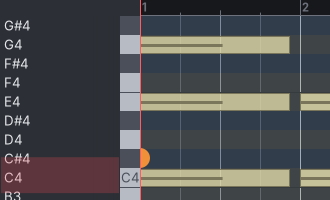
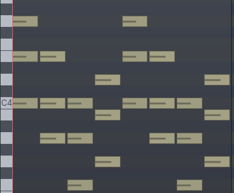

"A" → "Lanes: Velocity ▾" shows which lanes are open; "Track" → "Colors: Track ▾".
"View ▾" collects zoom focus ("Left"), which regions are editable ("Active Region") and the region list — the region list shows only when more than one region is open.
Never widens the window: the toolbar may shrink (it scrolls instead of pushing the window past the screen), and the tools panel takes its width from the canvas.
Zoom − / + / fit and follow-playhead stay, grouped at the right.
2Keyboard today (real, 2×) → proposed (2×)
Today

Proposed
Names on the keys, in their own row — no separate, mostly empty name column, no misalignment.
The pink block was the "scroomer": a scroll + zoom handle for the whole 0–127 range, drawn behind the row names. It becomes a thin range bar at the far left that looks like a scrollbar (drag = scroll, drag the ends = zoom).
Hovered key highlighted; C rows get a stronger line. Drum maps (MIDNAM) still widen the keys to fit names like "Kick".
3Notes and velocity see the proposed pane above
Velocity = brightness: loud notes solid, soft notes faded (in the track's color), instead of a thin dark line inside each note.
Selected notes: white outline (bar 3 above), not just a slightly different fill.
Velocity lane: 0 / 64 / 127 scale; chord notes side by side instead of one lollipop hiding the others; default height about a quarter of the pane.
Area after the region end stays shaded; bar numbers unchanged.
4Easier to reach region menu and MIDI regions in the editor
Right-click a MIDI region
Edit MIDI in window…Alt+P
Split/SeparateS
Duplicate
MuteAlt+1
Rename…Alt+9
Remove
…
Today it is Region › Edit › Edit in separate window… with no shortcut. The window opens zoomed to the region (today: 24 bars for an 8-bar region).
MIDI region in the editor — today

Proposed: faint beat and bar lines inside MIDI regions